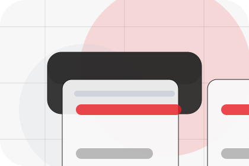
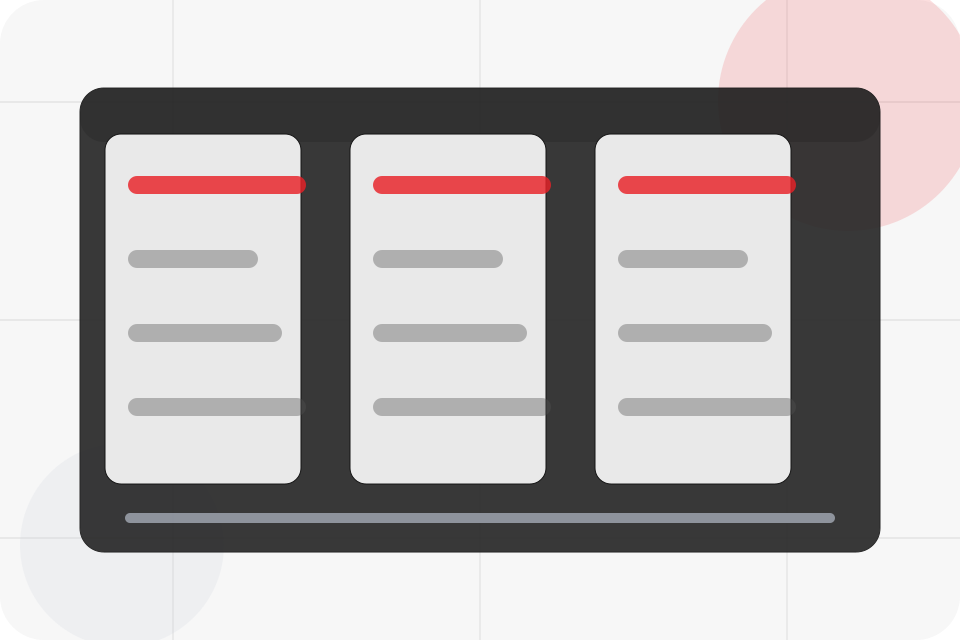
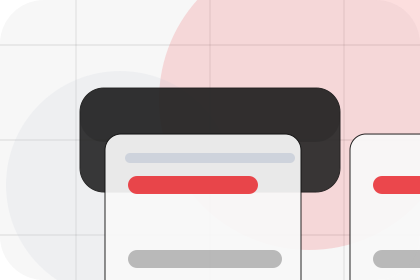
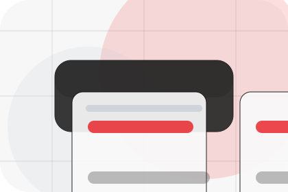
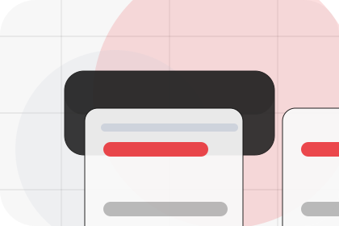
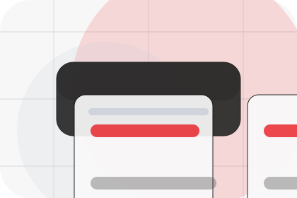
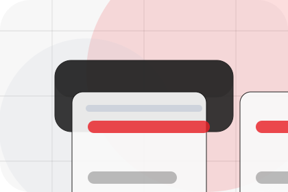
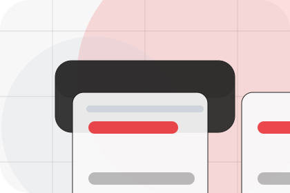
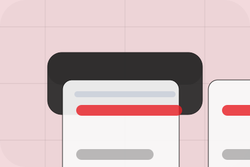

Best Fit
Who should use audit and when it belongs in the services journey.
Services / 01
Services opens as a clear energy decision hub: what Vault offers, who it helps, why it matters, and which route to take first.
The first screen combines positioning, proof, primary action, and fast internal navigation, so people can act immediately or compare the rest of the services route with context.
Centered product hero
Select the closest route and Vault keeps the next step, proof, and follow-up expectation aligned with cost reduction and resilience.

Services / 02
Audit explains the practical scope, best-fit situations, and expected outcome so energy visitors can compare options without decoding jargon.
The section keeps the offer concrete: what is included, who it is best for, what decision it supports, and which linked route gives the deeper detail.
Explore Services
Who should use audit and when it belongs in the services journey.

The practical benefit visitors should expect after choosing this route.

Where to compare details, pricing, support, or contact options before committing.
Services / 03
Design explains the practical scope, best-fit situations, and expected outcome so energy visitors can compare options without decoding jargon.
The section keeps the offer concrete: what is included, who it is best for, what decision it supports, and which linked route gives the deeper detail.
Explore ServicesWho should use design and when it belongs in the services journey.
The practical benefit visitors should expect after choosing this route.
Where to compare details, pricing, support, or contact options before committing.
Services / 04
Install explains the practical scope, best-fit situations, and expected outcome so energy visitors can compare options without decoding jargon.
The section keeps the offer concrete: what is included, who it is best for, what decision it supports, and which linked route gives the deeper detail.
Explore ServicesWho should use install and when it belongs in the services journey.
The practical benefit visitors should expect after choosing this route.
Where to compare details, pricing, support, or contact options before committing.
Services / 05
Maintain explains the practical scope, best-fit situations, and expected outcome so energy visitors can compare options without decoding jargon.
The section keeps the offer concrete: what is included, who it is best for, what decision it supports, and which linked route gives the deeper detail.
Explore ServicesVault structures maintain around best fit, what changes, and a clear next route so visitors can compare the block quickly before they calculate savings.
Calculate SavingsServices / 06
Monitor explains the practical scope, best-fit situations, and expected outcome so energy visitors can compare options without decoding jargon.
The section keeps the offer concrete: what is included, who it is best for, what decision it supports, and which linked route gives the deeper detail.
Explore Services

Who should use monitor and when it belongs in the services journey.
Services / 07
Support explains the practical scope, best-fit situations, and expected outcome so energy visitors can compare options without decoding jargon.
The section keeps the offer concrete: what is included, who it is best for, what decision it supports, and which linked route gives the deeper detail.
Open ContactWho should use support and when it belongs in the services journey.

The practical benefit visitors should expect after choosing this route.

Where to compare details, pricing, support, or contact options before committing.
Services / 08
Compliance explains the practical scope, best-fit situations, and expected outcome so energy visitors can compare options without decoding jargon.
The section keeps the offer concrete: what is included, who it is best for, what decision it supports, and which linked route gives the deeper detail.
Explore ServicesWho should use compliance and when it belongs in the services journey.
The practical benefit visitors should expect after choosing this route.
Where to compare details, pricing, support, or contact options before committing.
Services / 09
Scope explains the practical scope, best-fit situations, and expected outcome so energy visitors can compare options without decoding jargon.
The section keeps the offer concrete: what is included, who it is best for, what decision it supports, and which linked route gives the deeper detail.
Explore ServicesWho should use scope and when it belongs in the services journey.
The practical benefit visitors should expect after choosing this route.
Where to compare details, pricing, support, or contact options before committing.
Services / 10
Vault closes the services route with a clear action, a quick reminder of the value, and a low-friction way to calculate savings.
Visitors who are ready can use the primary action. Visitors who are still comparing can scan the section links, proof, and support routes before they calculate savings.
Calculate SavingsThe final block keeps the choice simple: act now, compare one more proof route, or send enough detail for a focused response.
Calculate Savingscost reduction and resilience
A renewable energy product site with minimalist hero, savings modules, battery/solar cards, and direct calculator. Services ends with a direct path to calculate savings, plus enough context for visitors who still need to compare.

Calculate SavingsInformation is provided for planning and should be reviewed for the final client, location, and operating rules.